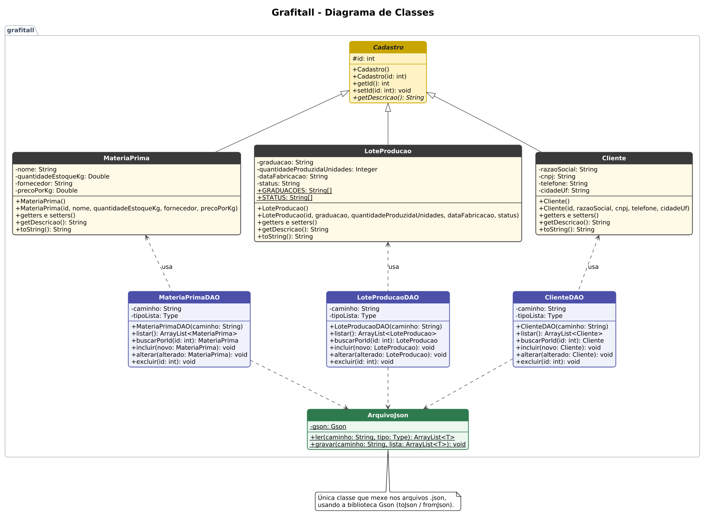
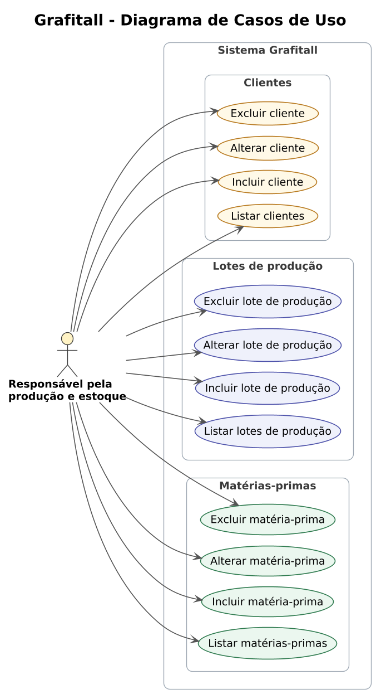
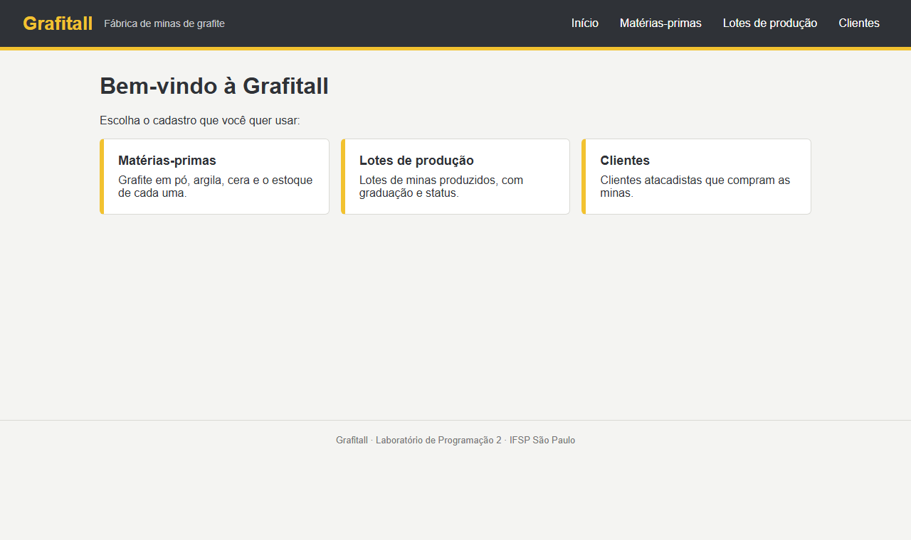
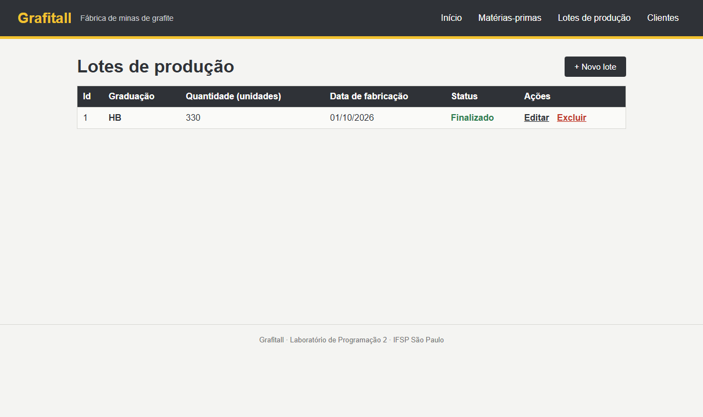
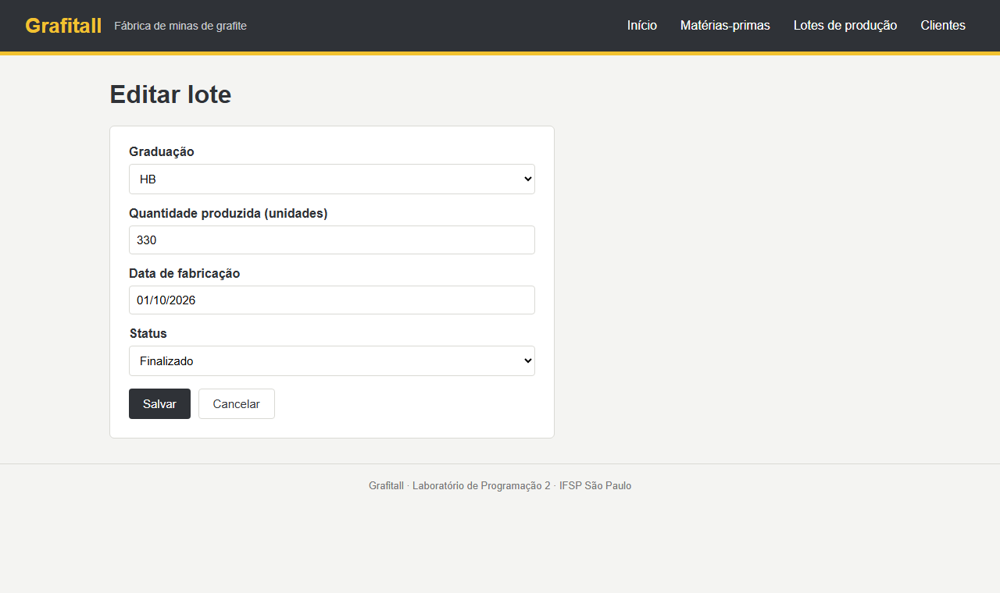
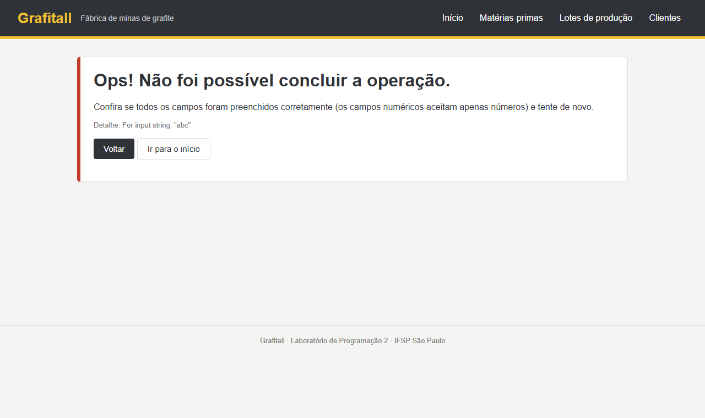

Grafitall
Sistema web de produção e estoque de minas de grafite
Guilherme Nascimento Bilibio
SPOLBP2 · Laboratório de Programação 2 · IFSP São Paulo
Prof. Domingos Bernardo
A Grafitall é uma fábrica de minas de grafite para lápis e lapiseiras.
O sistema organiza a produção, o estoque e os clientes em um só lugar, acessado pelo navegador.
Os responsáveis pela produção e pelo estoque.
Cada cadastro tem 4 atributos além do id e as operações listar, incluir, alterar e excluir.
toJson e fromJson da Gson. Sem banco de dados.<%@ include %>; erros vão para erro.jsp.abstract: não existe "cadastro genérico".protected: as subclasses enxergam o id.getDescricao() aparece no título do formulário de edição.

casos-de-uso.md.



<%@ include %>exceptionIncluir · Alterar · Excluir · Listar
github.com/toybile/Grafitall-LP2